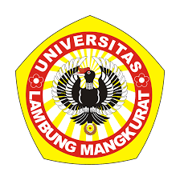

Brigjen H. Hasan Basri, Kayu Tangi, Banjarmasin, Kalimantan Selatan Telp: (0511) 3304405, 3304503

Fakultas Teknik Universitas Lambung Mangkurat (ULM) didirikan pada tahun
1965.
Fakultas Teknik merupakan Fakultas ke-7 yang didirikan di ULM setelah
Fakultas Hukum (1960),
Fakultas Ekonomi (1960), Fakultas Sosial (1960), Fakultas Pertanian
(1961), Fakultas Perikanan (1964),
dan Fakultas Kehutanan (1964). Pada saat Fakultas Teknik didirikan, ULM
sudah menjadi Universitas Negeri yang memiliki 2 lokasi,
Beberapa jurusan yang terdapat di Fakultas Teknik ULM adalah sebagai
berikut:
Program Studi Teknik Sipil (sejak 1 Juli 1966, berkampus di Banjarbaru, saat ini terakreditasi B
Program Studi Teknik Arsitektur (sejak 22 Oktober 1998, berkampus di Banjarbaru, saati ini terakreditasi B
Program Studi Teknik Pertambangan (sejak 21 September 2004 berkampus di Banjarbaru, saat ini terakreditasi C
Program Studi Teknik Kimia (sejak 21 September 2004, berkampus di Banjarbaru, saat ini terakreditasi B
Program Studi Teknik Lingkungan (sejak 23 Agustus 2006, berkampus di Banjarbaru, saat ini terakreditasi B
Program Studi Teknik Mesin (sejak 19 Oktober 2006, berkampus di Banjarbaru, saat ini terakreditasi C
Program Studi Teknologi Informasi (sejak 17 Oktober 2014, berkampus di Banjarmasin, saat ini terakreditasi C
Program Studi Magister Teknik Sipil (sejak 28 September 2001, berkampus di Banjarmasin, saat ini terakreditasi C